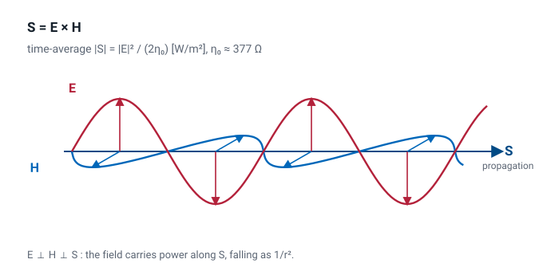
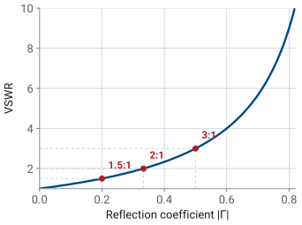
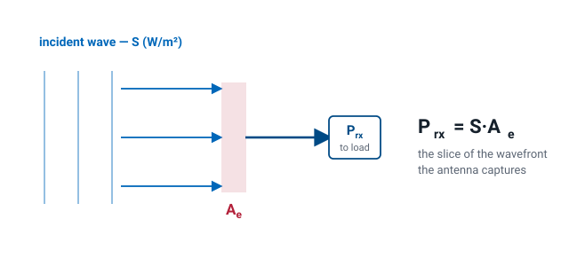
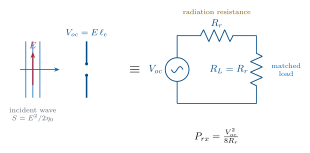
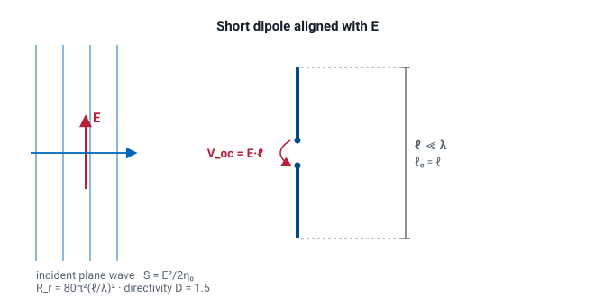
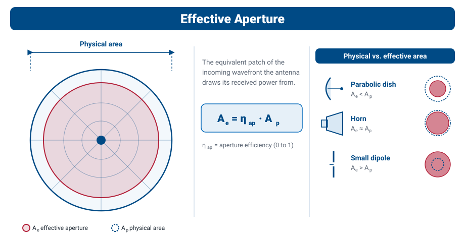
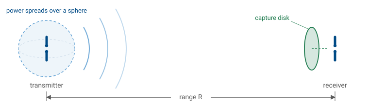

L2 - Basic Properties and Terminology#
Basic Properties and Terminology
Today we build the vocabulary for the rest of Module 1.
Lesson 2 · Antennas, Phased Arrays, and Radar Systems · Dr. Neil Rogers
Slides
Learning Objectives
- I can trace the physics chain from Maxwell's equations → telegrapher's equations → the wave equation → the plane-wave solution, and identify the time and space dependencies in each.
- I can explain why the far field of an antenna is a plane-wave-like transverse E-H pair falling off as 1/r.
- I can define and compute the headline antenna parameters: radiation intensity, directivity, gain, effective aperture, beamwidth, boresight, main / side / back lobes.
Learning Objectives, continued
- I can read a radiation pattern and pull out HPBW, FNBW, and sidelobe level.
- I can state the reciprocity principle and explain why an antenna's pattern, gain, and impedance are the same whether it transmits or receives.
- I can apply the Friis transmission equation — with EIRP and free-space path loss — to predict the received power in a link.
Where we were
Lesson 1 called the antenna a transducer: the device that hands a guided wave off to free space and takes it back again. That is the right picture, but it is not yet a number. Today we build the vocabulary that turns the picture into engineering — power density, radiation intensity, directivity, gain, efficiency, beamwidth, and effective aperture — and we walk the physics chain from Maxwell’s equations down to the plane wave that makes those definitions legal in the first place. Then we spend the vocabulary: reciprocity ties the transmit side to the receive side, and the Friis equation turns two antennas, a frequency, and a range into a received power in dBm. By the end of the lesson you can close a link budget on the back of an envelope.
Maxwell’s equations (source-free, linear media)
Every antenna analysis in this course starts from Maxwell’s equations. Antennas are a boundary-condition problem: currents on the antenna set tangential fields, those fields must match a solution that radiates outward. To see why they radiate, we walk the chain once.
The two curl equations are the ones that make waves. A changing \(\mathbf{H}\) in time creates a spatial curl in \(\mathbf{E}\), and a changing \(\mathbf{E}\) in time creates a spatial curl in \(\mathbf{H}\). Time and space are locked together — you cannot change one without changing the other. That coupling is the entire story of propagation.
The Telegrapher’s Equations
On a two-conductor transmission line, integrating Maxwell over the cross-section collapses the fields onto voltage \(v(z,t)\) and current \(i(z,t)\), with the geometry surviving only as a per-unit-length inductance \(L\) [H/m] and a per-unit-length capacitance \(C\) [F/m]:
Both give you the wave equation
Same structure as the curl pair: a spatial derivative on one side, a time derivative on the other. Differentiate one, substitute the other, and both \(v\) and \(i\) satisfy the 1-D wave equation
The propagation speed drops out: \(u = 1 / \sqrt{L C}\). On an air-filled line this is essentially \(c\).
In free space, the same “curl-of-curl” trick applied to Maxwell gives
The exact same equation applies to \(\mathbf{H}\). This is the equation whose solutions the rest of the course lives in.
A plane-wave solution
The canonical solution, propagating in \(+\hat{z}\):
\(\omega = 2 \pi f\) is the time frequency — how fast the field oscillates at a fixed point.
\(k = 2 \pi / \lambda\) is the space frequency (wave number) — how fast the field oscillates at a fixed instant in time.
\(\omega / k = c\) ties them together: the wave crest moves through space at \(c\).
Every field in this course is a function of both time and space. When we suppress the \(e^{j \omega t}\) factor and work with phasors, we’re not throwing time away — we’re agreeing to carry it silently so we can focus on the spatial structure. The moment we hit a bandwidth, dispersion, or pulsed-radar problem, the time dependence comes back and matters.
Impedance of free space and the far-field structure
Plugging the plane-wave \(\mathbf{E}\) back into Faraday’s law forces \(\mathbf{H}\) to be transverse, perpendicular to \(\mathbf{E}\), and
Far from an antenna, the radiated field looks locally like a plane wave — transverse E and H, ratio \(\eta_{0}\) — with a \(1/r\) amplitude fall-off that we’ll derive from the radiation integrals in L6. That \(1/r\) (equivalently \(1/r^{2}\) in power) is why the antenna’s directional properties even matter — they set how much power lands on your receiver in a given direction.
The same wave is a ripple in space and in time
The same wave is a ripple in space (freeze the clock → wavelength \(\lambda\)) and a ripple in time (stand at one point → period \(T\)), tied together by the crest speed/phase velocity \(c = \lambda f = \omega / k\). Drag the sliders, or press play to watch a crest travel.
The same wave in 3-D: two fields at right angles
Two fields, not one — each at right angles to the other and to the direction of travel. Drag the phase and watch two things. \(\mathbf{E}\) and \(\mathbf{H}\) peak together and cross zero together, so they are in phase; and when both swing negative, the green arrow does not turn round. Power keeps flowing in \(+z\).
The Poynting vector
With the wave equation in hand, we can define the working vocabulary for the rest of Module 1.
Before we can say how much power an antenna sends in a given direction, we need the quantity that measures power flow itself. The Poynting vector is
the instantaneous power per unit area carried by the field, pointing in the direction of propagation.
The time-average Poynting vector
For a time-harmonic field we almost always want the time-average,
and in the far field — where \(\mathbf{E}\) and \(\mathbf{H}\) are transverse and locally plane-wave-like with \(|\mathbf{E}| / |\mathbf{H}| = \eta_{0}\) — its magnitude collapses to
Power density in the far field
Because the far-field amplitude falls as \(1/r\), this power density falls as \(1/r^{2}\) — the inverse-square law. This \(S_{\text{rad}}\) is exactly the quantity that appears in the radiation-intensity definition next.

Radiation intensity
Power radiated per unit solid angle, in a given direction:
where \(S_{\text{rad}} = |\mathbf{E}|^{2} / (2 \eta_{0})\) is the time-average Poynting magnitude in the far field. The \(r^{2}\) cancels the \(1/r^{2}\) in \(S_{\text{rad}}\), so \(U\) depends only on direction, not distance. Total radiated power is
Solid angle
A solid angle \(\Omega\) (in steradians) is the 3-D analogue of a planar angle: the area a cone cuts out of a unit sphere. A cone pointed in some direction subtends a solid angle \(d\Omega\) and intercepts a patch of area \(r^{2}d\Omega\) on a sphere of radius \(r\); the whole sphere is \(4\pi\) sr. Radiation intensity is the power flowing through that cone per unit solid angle — which is why it is a property of direction alone.
Drag to rotate the sphere; slide the cone half-angle \(\alpha\) to watch the solid angle \(\Omega = 2\pi(1 - \cos\alpha)\) and the patch it carves out grow.
Directivity
How well the antenna concentrates power in a given direction relative to an isotropic radiator:
\(D\) is dimensionless (or in dBi when converted to decibels). “Directivity” — no losses, purely geometric.
Directivity — the pencil-beam approximation
A useful rule of thumb: for a pencil beam with half-power beamwidths \(\theta_{1}\) and \(\theta_{2}\) (in radians),
That 41,253 is the lossless geometric bound — it assumes every watt lands inside the main beam. Real horns and dishes leak into sidelobes and spill past the reflector, so in practice you substitute a constant of 26,000 to 32,400, which is the same estimate docked the 1 to 2 dB that the sidelobes and spillover actually cost.
Gain and efficiency
Gain is directivity with losses folded in:
Efficiency accounts for ohmic and dielectric losses in the antenna structure. Mismatch loss at the antenna terminals is usually broken out separately as realized gain \(G_{\text{re}} = (1 - |\Gamma|^{2}) G\).
When your instrument or datasheet reports gain in dBi, it is almost always the realized gain in the peak direction.
Build the gain
Start from a directivity, then watch radiation efficiency and mismatch each carve a few dB away. The bars trace directivity → gain \(G = \eta_{\text{rad}} D\) → realized gain in dBi.
Γ, VSWR, and Power Reflected
Recall the transmission-line result you already own.
Remember this from intro EM?
A load that does not equal the line’s characteristic impedance sends part of the incident wave back, and the reflected-to-incident voltage ratio at the load is the reflection coefficient
Same algebra, new load: in Lesson 4 the \(Z_L\) in that formula becomes the antenna’s own input impedance \(Z_{\text{in}}\), which is what makes matching an antenna problem rather than a circuits problem.
Power as fractions of the incident power
Power splits as fractions of the incident power:
Quick Reference — Γ vs VSWR vs Power

Γ, VSWR, and Power — the verdict table
VSWR |
\(\vert\Gamma\vert\) |
\(P_{\text{refl}}/P_{\text{inc}}\) |
\(P_{\text{acc}}/P_{\text{inc}}\) |
Verdict |
|---|---|---|---|---|
1.0:1 |
0.00 |
0% |
100% |
perfect |
1.5:1 |
0.20 |
4% |
96% |
good |
2.0:1 |
0.33 |
11.1% |
88.9% |
acceptable |
3.0:1 |
0.50 |
25% |
75% |
poor |
The forward and reflected waves add to a standing wave
A mismatch sends part of the wave back; the forward and reflected waves add to a standing wave. Slide \(|\Gamma|\) and press play — the envelope’s maxima and minima set the VSWR, and the nulls stay pinned in place.
Comparing gain patterns
Toggle antenna types on/off to compare their E-plane gain patterns against an isotropic reference. Slide the dish diameter to watch the parabolic beam narrow and its peak gain climb — a direct look at how a larger \(A_{\text{phys}} / \lambda^{2}\) buys gain.
Beamwidth, boresight, and lobes
Read on a radiation pattern:
Boresight — the direction of peak radiation. Antennas are usually aimed along boresight.
Half-power beamwidth (HPBW) — angular width where the pattern drops by 3 dB (to \(1/2\) in power).
First-null beamwidth (FNBW) — angular width between the first nulls on either side of the main lobe. Roughly \(2\times\) HPBW for most simple patterns.
Main lobe — the lobe containing boresight.
Sidelobes — every other lobe. Reported by sidelobe level (SLL) in dB below the main lobe peak.
Back lobe — the lobe centered at \(180^{\circ}\) from boresight. The front-to-back ratio (F/B) is main-lobe peak divided by back-lobe peak.
Beamwidth and sidelobe level are the two knobs you’ll trade against each other in every array-tapering problem in Module 3.
HPBW, FNBW, and SLL move with aperture size
The plot below shows the rectilinear (\(\theta\) vs. dB) view of the same aperture pattern we used for the horn and dish in the polar plot. Slide D/λ to change the aperture size; the HPBW, FNBW, and SLL markers move with it.
Reciprocity — the same antenna, both ways
Everything so far described an antenna transmitting: it takes power from a source and shapes it into a pattern. But the same piece of metal also receives, and you might worry it behaves differently in the two roles. It does not.
Reciprocity principle. For any antenna made of ordinary (linear, passive, isotropic) materials, its receiving behavior is identical to its transmitting behavior. The pattern, the directivity and gain, the input impedance, and the polarization are the same function of angle whether the antenna is launching a wave or catching one. An antenna that radiates best toward the horizon is also most sensitive to signals arriving from the horizon.
This is not an accident of any particular geometry — it follows from the symmetry of Maxwell’s equations themselves (the Lorentz reciprocity theorem). Swap the source and the observation point in a reciprocal medium and the fields trade places unchanged.
Why we care
Two payoffs. First, you can characterize an antenna in whichever mode is convenient — a measurement range almost always puts the antenna under test in receive — and the numbers carry straight over to transmit. Second, it ties the two sides of the antenna together: the transmit quantity gain and the receive quantity effective aperture, which we define next, are not independent. Reciprocity locks them to a single universal ratio.
The one exception. Reciprocity fails when the medium itself is non-reciprocal — a magnetically biased ferrite, or a magnetized plasma like the ionosphere. That is exactly what makes a circulator or isolator work: pass energy one way, block the other. Antennas radiating into air are reciprocal, so we use it freely.
Effective aperture
Flip the antenna around to receive. A passing wave carries power density \(S_{\text{inc}}\) (W/m²); the antenna delivers some power \(P_{\text{rx}}\) to its load. The ratio has units of area and is the effective aperture (you will hear “capture area” in the wild — avoid it; the course term is effective aperture):
Effective aperture — capturing an incident wave

The antenna is a receiving circuit
So how big is that effective aperture — and where does the famous \(\lambda^{2}/4\pi\) come from? We can derive it.
An incident field \(E\) aligned with the antenna induces an open-circuit voltage \(V_{\text{oc}} = E\ell_e\), where \(\ell_e\) is the antenna’s effective length. The antenna then behaves like a Thévenin source with internal radiation resistance \(R_{\text{rad}}\); a conjugate-matched load \(R_L = R_{\text{rad}}\) draws the maximum available power:
Where the 8 comes from

Where the 8 comes from: at match the load sees \(V_{\text{oc}}/2\) across it (that is the factor of 4), and time-averaging a sinusoid adds another 2 — hence 8.
Example: a short dipole
Do it for the simplest antenna — an infinitesimal (Hertzian) dipole with uniform current. For that idealized element the effective length is the physical length, \(\ell_e = \ell\), and the radiation resistance is \(R_{\text{rad}} = 80\pi^{2}(\ell/\lambda)^{2}\).
A practical center-fed short dipole carries a triangular current instead, which halves both: \(\ell_e = \ell/2\) and \(R_{\text{rad}} = 20\pi^{2}(\ell/\lambda)^{2}\) — the ratio below, and therefore \(A_e\), comes out the same.
Divide, and watch the ℓ’s cancel
The incident power density is \(S = E^{2}/2\eta_{0}\) with \(\eta_0 = 120\pi\ \Omega\). Divide, and watch the \(\ell\)’s cancel:

Recognize the number
That \(1.5\) is exactly the short dipole’s directivity \(D\) (we derive it from the radiation integral in Lesson 6 — borrow it here). So \(A_e = D\lambda^{2}/4\pi\); folding in ohmic losses (\(G = \eta_{\text{rad}}D\)), and assuming a lossless match with the reactance tuned out and the polarization aligned,
It’s universal. We computed only one antenna — but reciprocity guarantees the ratio \(A_e/G\) is the same constant for every antenna, from a short dipole to a giant dish. (Equivalently, a thermodynamic argument — an antenna in a blackbody cavity must absorb and re-radiate equally in each direction — pins down the same constant.) So the boxed relation is truly universal.
Physical vs. effective aperture
An antenna with a real opening of area \(A_{\text{phys}}\) (a horn, a dish) never uses all of it perfectly — illumination taper, spillover, and feed blockage waste some. The aperture efficiency \(\eta_{\text{ap}}\) (typically 0.5–0.7 for a dish) captures this:
Physical vs. effective aperture — dish, horn, and dipole

Worked example — gain and captured power of a 1.2 m dish
Worked example — gain and captured power of a 1.2 m dish
A 1.2 m dish has \(A_{\text{phys}} = \pi(0.6)^{2} = 1.13\ \text{m}^{2}\); with \(\eta_{\text{ap}} = 0.6\) that is \(A_{e} = 0.68\ \text{m}^{2}\). At 10 GHz (\(\lambda = 3\ \text{cm}\)) the gain is \(G = 4\pi A_{e} / \lambda^{2} \approx 9500\), or 39.8 dBi. A wave of density \(S_{\text{inc}} = 1\ \mu\text{W/m}^{2}\) then delivers \(P_{\text{rx}} = S_{\text{inc}} A_{e} \approx 0.68\ \mu\text{W}\).
A subtlety worth pinning down
People often say “effective aperture shrinks with frequency,” but that is only true if you hold gain fixed — then \(A_{e} = (\lambda^{2}/4\pi)G\) falls as \(\lambda^{2}\). For a fixed physical dish, the metal fixes \(A_{e} = \eta_{\text{ap}} A_{\text{phys}}\), and it does not change with frequency — to first order: \(\eta_{\text{ap}}\) itself drifts with illumination taper and surface tolerance (the Ruze relation), which is why real dishes stop gaining at the top of their band. Instead the gain climbs as \(f^{2}\), because the same aperture spans many more wavelengths. Both statements are the same universal relation read in opposite directions.
Effective aperture vs gain and frequency
The widget below lets you run that argument both ways. Start in Physical dish mode and sweep the frequency: the effective aperture sits still while the gain climbs about 6 dB per octave. Then switch to Fixed gain mode and sweep again — now the gain is pinned and the effective aperture collapses as \(\lambda^{2}\). Same equation, two different things held fixed, and knowing which one your problem holds fixed is the whole trick.
The Friis transmission equation
Effective area is what a receiver catches; gain is what a transmitter concentrates. Put one at each end of a link and you can predict the received power directly.

A transmitter feeds \(P_t\) into an antenna of gain \(G_t\), so at range \(R\) the power density on boresight is the isotropic value \(P_t/4\pi R^{2}\) boosted by \(G_t\):
The Friis transmission equation — combining the two
The receive antenna, with effective aperture \(A_e = G_r \lambda^{2}/4\pi\), collects \(P_r = S_{\text{inc}}A_e\). Combining the two:
— the Friis transmission equation, the backbone of every link budget.
Valid when: far field at both ends · polarization matched · both ends conjugate-matched (or use realized gain) · free space, no multipath.
Three things to read off it
\(P_t G_t\) is the EIRP (effective isotropic radiated power): the whole transmit side collapses to one number — the power an isotropic radiator would need to match this antenna on boresight.
The \((\lambda / 4\pi R)^{2}\) factor is the free-space path loss. In dB, \(\text{FSPL} = 20 \log_{10}\!\left( \dfrac{4 \pi R}{\lambda} \right)\) — it climbs with both frequency and range, and it is by far the largest term in most links.
Everything is multiplicative, so in decibels the link budget is just addition: \(P_r[\text{dBm}] = P_t + G_t + G_r - \text{FSPL}\).
Worked example — a 2.4 GHz satellite uplink budget
Worked example — a 2.4 GHz satellite uplink budget
A ground station transmits \(P_t = 10\ \text{W}\) (40 dBm) at \(2.4\ \text{GHz}\) (\(\lambda = 0.125\ \text{m}\)) through a \(G_t = 20\ \text{dBi}\) antenna to a satellite \(R = 600\ \text{km}\) away with a \(G_r = 6\ \text{dBi}\) antenna:
— about a picowatt, and a perfectly ordinary receive level.
Friis is the one-way link. Send the wave out to a target, let it scatter, and collect the echo, and you apply Friis twice with the target’s radar cross section in between — that is the radar range equation, built in Module 4.
Summary — wave and power quantities
Symbol / idea |
What it is |
Number to remember |
|---|---|---|
\(\eta_0\) |
Free-space wave impedance, \(\vert\mathbf{E}\vert/\vert\mathbf{H}\vert\) in the far field |
\(377\ \Omega\) |
\(S_{\text{rad}}\) |
Time-average power density in the far field |
\(\vert\mathbf{E}\vert^{2}/2\eta_0\), falls as \(1/r^{2}\) |
\(U(\theta,\phi)\) |
Radiation intensity — power per solid angle, distance-free |
\(U = r^{2}S_{\text{rad}}\), whole sphere \(= 4\pi\) sr |
Summary — directivity, gain, and pattern
Symbol / idea |
What it is |
Number to remember |
|---|---|---|
\(D(\theta,\phi)\) |
Directivity: concentration relative to isotropic, geometry only |
\(D = 4\pi U/P_{\text{rad}}\); pencil beam \(\approx 41{,}253/\theta_1^\circ\theta_2^\circ\) (real: 26,000–32,400) |
\(G\), \(\eta_{\text{rad}}\) |
Gain is directivity after ohmic loss |
\(G = \eta_{\text{rad}}D\), \(\eta_{\text{rad}} = P_{\text{rad}}/P_{\text{in}}\) |
Realized gain |
Gain after mismatch as well |
\(G_{\text{re}} = (1 - \vert\Gamma\vert^{2})G\); VSWR 2:1 costs 11% |
HPBW / SLL / F-B |
What you read off a pattern |
HPBW at \(-3\) dB, FNBW \(\approx 2\times\) HPBW |
Summary — aperture and reciprocity
Symbol / idea |
What it is |
Number to remember |
|---|---|---|
\(A_e\) |
Effective aperture — the receive-side twin of gain |
\(A_e = \lambda^{2}G/4\pi\); \(A_e = \eta_{\text{ap}}A_{\text{phys}}\), \(\eta_{\text{ap}} \approx 0.5\)–\(0.7\) |
Reciprocity |
Pattern, gain, and impedance are the same transmitting or receiving |
Locks \(A_e/G = \lambda^{2}/4\pi\) for every antenna |
Summary — the link
Symbol / idea |
What it is |
Number to remember |
|---|---|---|
EIRP, FSPL |
The two halves of a link budget in dB |
\(\text{EIRP} = P_tG_t\); \(\text{FSPL} = 20\log_{10}(4\pi R/\lambda)\) |
Friis |
One-way received power |
\(P_r = P_tG_tG_r(\lambda/4\pi R)^{2}\); the worked link: \(156\ \text{dB}\) loss, \(-90\ \text{dBm}\) |
Practice
Where this is going
The rest of Module 1 takes each term you just defined and makes it a real engineering quantity. Lesson 3 attaches a direction to \(\mathbf{E}\) — polarization — and asks how every parameter here drifts with frequency, which is bandwidth. Lesson 4 walks into the antenna terminals: input impedance, \(S_{11}\), and the matching networks that turn the \(\Gamma\) and VSWR algebra of today into hardware. Lesson 5 asks where the plane-wave picture is even legal, which is the \(2D^2/\lambda\) far-field boundary and the reason antenna ranges are as long as they are. Lesson 6 then goes back and earns the results we borrowed today, deriving the \(1/r\) far field — and the \(D = 1.5\) — from an arbitrary current distribution.
Before next lesson
The link budget is the payoff you will keep reusing. Every array in Module 3 exists to raise \(G_t\) or \(G_r\) in that one equation, and every radar problem later in the course is Friis applied twice. Before the next class, read the assigned sections on polarization and bandwidth, and come ready to explain what “vertical polarization” means in terms of the plane-wave solution we wrote today.